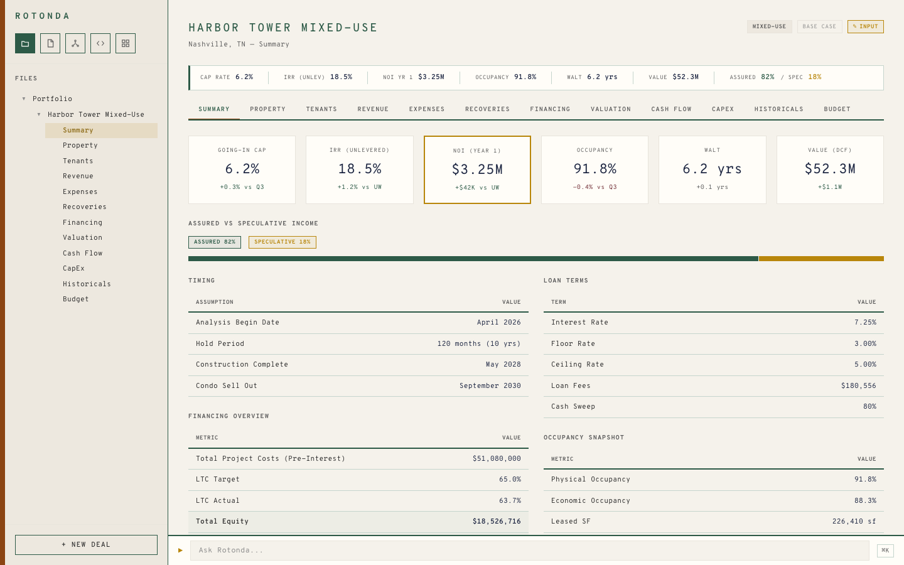
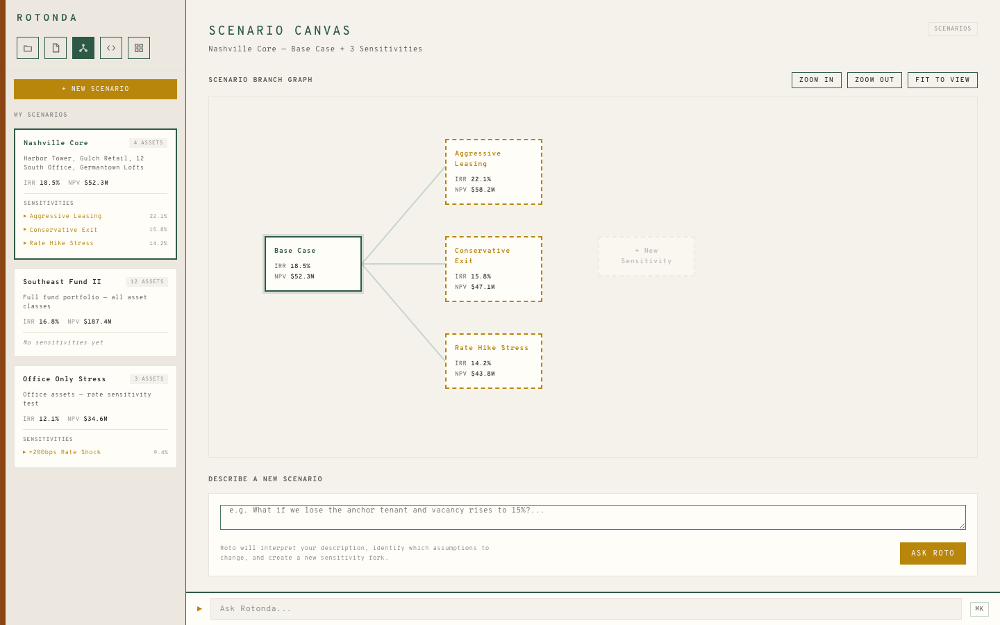
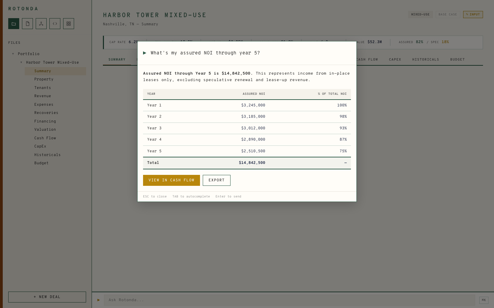
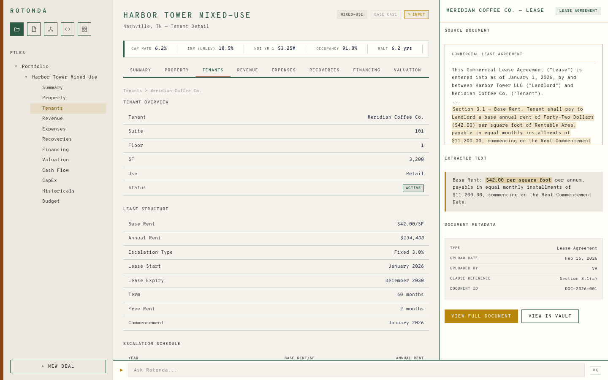
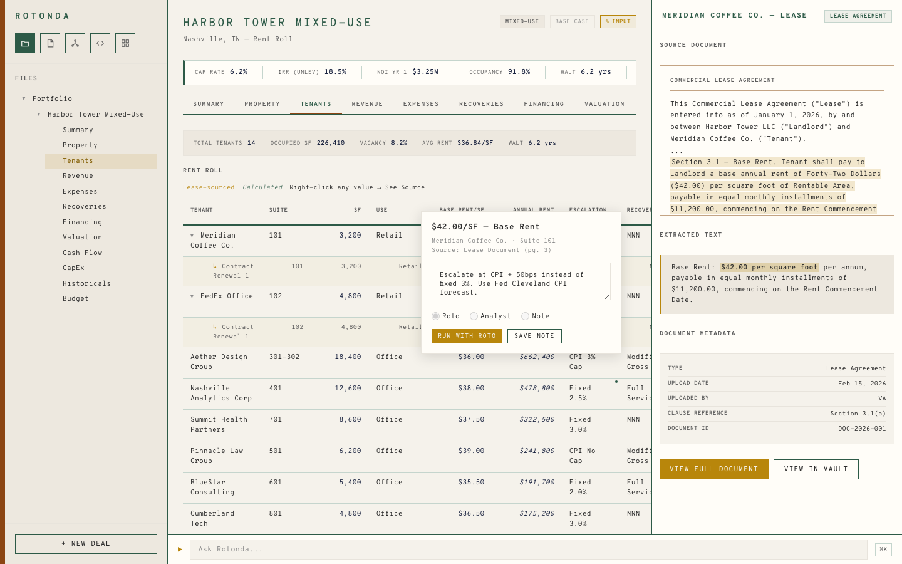
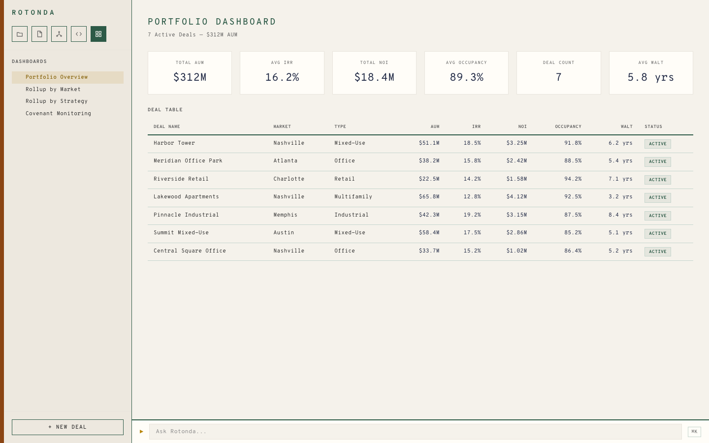

The structured data and modeling infrastructure for Commercial Real Estate. AI is the engine. Rotonda is the infrastructure that makes the engine useful. As models improve, Rotonda improves. Complementary — not competitive.
Every property, lease, and tenant stored as structured records — not spreadsheet cells. Every data point traceable to its source document.
Models with transparent calculation logic. Change a rent escalation and see exactly how it flows through NOI, cash flow, and returns — instantly.
Run rate hike, lease-up, and hold/sell scenarios side by side. Compare assumptions across your entire portfolio — not in separate workbooks.
Automatic aggregation across funds, markets, and strategies. Real-time covenant monitoring and performance tracking at the portfolio level.
Ask questions in plain English — "What are the 10 biggest risks in my portfolio?" AI translates your intent; the system runs the numbers.
Upload rent rolls, operating statements, and lease abstracts. AI extracts the data. Every change tracked with full lineage.

Every asset opens to a structured summary — cap rate, IRR, NOI, occupancy, and active scenario context in a single view.

Fork, branch, and compare scenarios visually. Model rate hikes, lease-up timelines, or disposition strategies — each as a complete set of assumptions.

Ask questions across your portfolio in plain English. "What's the accrued NOI through year 5?" — the AI plans, the system calculates.

Every tenant record linked to its source lease. Base rent, escalations, recovery structures, and renewal options — structured, not buried in PDFs.

Contextual comments attached to specific assumptions, rent rolls, and calculations. Every note tied to the data it references — not lost in email threads.

Portfolio-level intelligence across all assets. NOI, occupancy, WALT, covenant monitoring, and rollup analytics — updated continuously.
Once your asset data is structured, scenario-aware, and queryable:
Detect trajectory toward breach before it happens. Alert with context: which covenant, which asset, what changed.
Real-time IRR and MOIC tracking against your original underwriting. Not quarterly manual re-underwriting in Excel.
Auto-generated quarterly commentary grounded in your actual portfolio data with correct attribution.
Reprice your entire portfolio in minutes when a rate change or macro shock hits. Surface the assets that need attention.
The data architecture is the compounding asset.